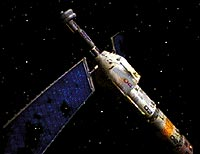
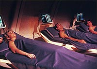
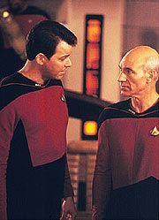
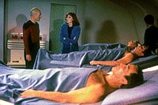
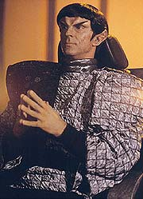
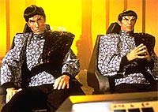
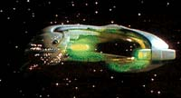

|
MANCHETE
DO EPISÓDIO
Episódio
"morno" traz de volta velhos
inimigos da Federação: os Romulanos
Episódio
anterior | Próximo
episódio
Sinopse:
Data Estelar: 41986.0.
Enquanto aguarda o retorno do capitão Picard de uma conferência da
Federação, a tripulação da Enterprise descobre um satélite da
Terra do século 20 à deriva no espaço. Ele contém três corpos
preservados criogenicamente, que Data decide trazer a bordo.
 Quando
Picard volta à nave, ele ordena que La Forge marque um curso para a
Zona Neutra Romulana, onde dois postos avançados da Federação
foram destruídos. A Enterprise tem como missão determinar os
responsáveis pelo incidente, que pode ser um prelúdio de uma nova
guerra com os Romulanos, que se mantiveram isolados por décadas.
Após Data trazer os corpos de volta, a dra. Crusher é capaz de
ressuscitá-los. Descobre-se que são uma dona de casa, um homem de
negócios e um cantor do fim do século 20. Os novos visitantes
sofrem para se adaptar à nova realidade do século 24,
principalmente depois que Picard pede que Riker mantenha-os longe
dele, em razão da situação de tensão vivida pela Enterprise na
Zona Neutra.
 Chegando
na borda da fronteira, a tripulação descobre que os postos da
Federação simplesmente desapareceram. Nesse momento, uma nave
Romulana desativa sua camuflagem e abre frequências de comunicação
com a Enterprise.
Em um diálogo tenso, os oficiais da Enterprise são avisados de que
as hostilidades entre Romulus e a Federação continuam à beira da
guerra. Entretanto, os Romulanos revelam que nada tiveram a ver com
a destruição dos postos. Segundo eles, suas próprias bases na
Zona Neutra haviam sido destruídas.
Picard consegue estabelecer um frágil pacto com os inimigos,
resultando de um intercâmbio de informações a respeito de
qualquer descoberta sobre os responsáveis pela destruição dos
postos. Com a ameaça de guerra temporariamente evitada, a
Enterprise vai de encontro à USS Charleston, que levará os
sobreviventes do século 20 de volta à Terra.
Comentários:
 "The
Neutral Zone" oferece duas histórias simultâneas, nenhuma
delas capaz de gerar real entusiasmo. A única sustentação desse
episódio junto aos fãs é história: os Romulanos estão de volta!
Esse único fator pode parecer pouca coisa, mas levando em conta o
impacto que traria para série, ressuscitando os Romulanos do limbo
em que se encontravam, não é nada trivial. Desde sua primeira
aparição, no episódio da Série Clássica "Balance
of Terror", essa espécie aparentada dos Vulcanos tem
despertado o interesse e a fascinação dos fãs. A garantia de que
os Romulanos estavam de volta para A Nova Geração foi um
grande presente para a audiência.
 Infelizmente,
se o motivo do episódio foi justo, trazendo os Romulanos de volta e
aludindo a um inimigo ainda mais poderoso, não se pode dizer o
mesmo de sua execução. Desde o primeiro bloco, quando Picard
ordena a ida à Zona Neutra, o episódio promete.
Promete no primeiro ato, mas não entrega. Promete no ato seguinte e
o telespectador pensa: "agora vai". Mas não vai. Promete
no terceiro ato, a audiência na expectativa, e quando parece que
vai, vai... para mais um intervalo. Ou seja, é um episódio que
nunca acontece. A confrontação tão esperada só acontece no fim,
fazendo com que o episódio se resuma somente em um batepapo de
Picard com o comandante Romulano pela tela da Enterprise. Muito
pouco, mesmo em se tratando dos adoráveis alienígenas de orelhas
pontudas.
 A
história que ocorre paralelamente, a "visita" dos três
humanos do século 20 à Enterprise, é até interessante, mas também
não consegue sustentar o episódio por si. O humor dessa vez é bem
executado, com boas tiradas que vão desde à conclusão de Data de
que "dona de casa" deve ser "algum tipo de trabalho
imobiliário" até a reação do homem de negócios ao reclamar
dos "serviços" da Enterprise.
Especialmente interessante é a relação que se estabelece entre
Sonny, o músico, e Data. Além de ser o mais divertido dos três
visitantes, com seu jeito despachado e suas críticas diretas ao século
24, Sonny oferece cenas engraçadas, como a em que ele e Data
planejam uma festa a bordo ou a que ele vai até a enfermaria pedir
um comprimido para dormir e passa uma cantada na dra. Crusher.
 A
idéia de colocar os três a bordo --ícones do nosso mundo
capitalista-- foi confrontar de forma direta as filosofias do
passado e do futuro utópico de Gene Roddenberry. O homem de negócios,
Ralph, descobre que seus valores de obtenção de fortuna já não têm
importância na nova realidade. Sonny confronta problemas sociais
atuais (como o abuso de drogas, o alcoolismo e, novamente, a visão
egoísta das celebridades) com um mundo em que a televisão não
existe mais como forma de entretenimento e a utilização de
medicamentos, além de ser rara, visa apenas o tratamento de doenças,
e não interferências com a fisiologia do organismo visando apenas
conveniências, como o uso de pílulas para dormir ou estimulantes.
Tudo isso para não mencionar o Synthehol, um substituto do álcool
etílico incapaz de embriagar.
Dos três peixes fora d´água, a mais sem graça é Clare, uma
simples dona de casa que permanece frágil e pouco motivada do início
ao fim do episódio. Seu modo simples de vida, voltado para a família,
perde o sentido quando a família não existe mais, sepultada mais
de 300 anos atrás.
Embora o conflito não seja muito claro, a presença de Clare
carrega a mensagem de que no novo mundo não existe mais a dedicação
exclusiva "ao lar". Homens e mulheres se relacionam em
igualdade de condições e compartilhando igualmente suas
responsabilidades. A "profissão imobiliária" de Clare não
mais é praticada no século 24. Infelizmente, a crítica diluiu-se
em meio à dificuldade de criar diálogos que deixassem transparecer
essa mensagem, tornando as passagens de Clare, apoiadas pela
igualmente frágil e pouco desenvolvida (até aquele momento) Deanna
Troi, tornam os momentos da dupla os mais sonolentos do segmento.
 Em
termos visuais, somos brindados com os novos uniformes e visuais
Romulanos (agora com saliências sobre as sombrancelhas, para
diferenciar dos Vulcanos) e a nova Ave de Guerra, uma nave cujo
design persiste até os dias atuais como o padrão para veículos
daquela raça. Além disso, vemos um despedaçado satélite
terrestre no melhor estilo do século 20, com painéis solares e
portas de abertura manual. O fato de ele conter gravidade artificial
é uma tremenda incoerência com nosso atual nível tecnológico,
mas entenda-se nas entrelinhas deste incidente um "orçamento
de telvisão" para fazer cenas em ambiente de microgravidade em
1988.
No fim das contas, o melhor termo para definir "The Neutral
Zone" é "morno" --há um potencial para uma
grande história escondido em algum lugar, mas ele não se realiza.
Pelo menos o episódio tem o mérito de trazer de volta uma espécie
que daria muito o que falar nas próximas temporadas...
Citações:
Sonny - "What do
you guys do? I mean, you don't drink, and you ain't got no TV. It
must be kind of boring, ain't it?"
("O que vocês fazem por aqui? Quer dizer, vocês não bebem, e
vocês não têm TV. Deve ser meio chato, não?")
Tebok - "Silence your dog, captain."
("Cale o seu cachorro, capitão.")
Tebok - "Your presence is not wanted. Do you understand my
meaning, captain? We... are back."
("Sua presença não é desejada. Você entende o que quero
dizer, capitão? Nós... estamos de volta.")
Trivia:
 O ator Marc Alaimo, que faz o comandante romulano Tebok, voltaria a Jornada
nas Estrelas para alcançar fama definitiva como o cardassiano
gul Dukat, em Deep Space Nine.
O ator Marc Alaimo, que faz o comandante romulano Tebok, voltaria a Jornada
nas Estrelas para alcançar fama definitiva como o cardassiano
gul Dukat, em Deep Space Nine.
Maurice Hurley afirma que o roteiro foi escrito em um dia e meio.
Era o último episódio da temporada e o prazo estava estourado.
Originalmente, ele faria parte de uma seqüência de três episódios,
em que a Frota e os Romulanos se uniriam contra a ameaça dos Borgs,
raça recentemente descoberta. Os Borgs foram concebidos para
substituir os decepcionantes Ferengis. Mas, além da falta de tempo,
houve na época uma greve dos roteiristas. Então, os Borgs tiveram
que esperar até a segunda temporada para aparecer pela primeira
vez, no episódio "Q Who?".
Fãs mais atentos devem ter percebido uma cena estranhamente longa
de uma oficial de ciências entrando num turboelevador. Aquela era
Susan Sackett, escritora e assistente pessoal de Gene Roddenberry
desde 1974. Ela ganhou aquela cena numa aposta que fez com ele de
que perderia peso. Ela trabalhou em Jornada até a morte de
Gene Roddenberry, em 1991, e contribuiria ainda com dois episódios
da Nova Geração: "Ménage à Troi"
(terceiro ano) e "The Game" (quinto ano).
Neste episódio é estabelecido que a primeira temporada na Nova
Geração se passa no ano 2364 terrestre. Também ficamos
sabendo, através de Data, que a televisão deixou de existir após
2040.
Este episódio também marca a estréia da nova nave Romulana, a Ave
de Guerra (Warbird).
Ficha
técnica:
História de Deborah McIntyre &
Mona Glee
Roteiro de Maurice Hurley
Direção de James L. Conway
Exibido em 16/05/1988
Produção: 026
Elenco:
Patrick Stewart como
Jean-Luc Picard
Jonathan Frakes como William Thomas Riker
Brent Spiner como Data
LeVar Burton como Geordi La Forge
Michael Dorn como Worf
Gates McFadden como Beverly Crusher
Marina Sirtis como Deanna Troi
Wil Wheaton como Wesley Crusher
Elenco convidado:
Marc Alaimo como
comandante Tebok
Anthony James como sub-comandante Thei
Leon Rippy como L.Q. "Sonny" Clemens
Gracie Harrison como Clare Raymond
Peter Mark Richman como Ralph Offenhouse
Episódio
anterior | Próximo
episódio
|